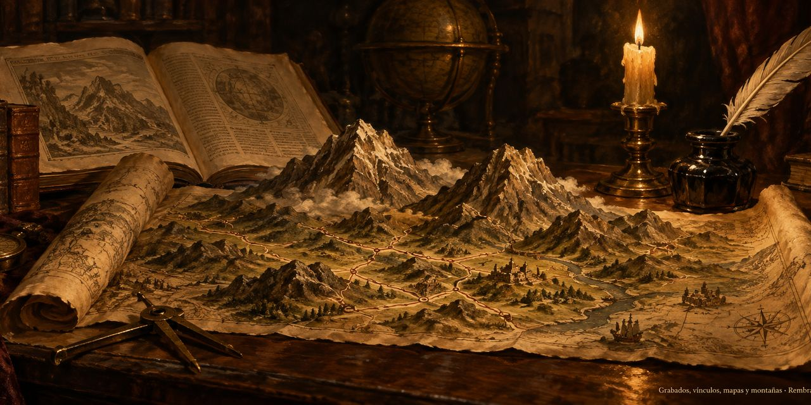

18 de octubre de 2026
Grabados, vínculos, mapas y montañas

El día amaneció con báscula y pincel: la casa pesó sus dibujos y dejó escrito que toda imagen que salga lo hará liviana, sin perder la luz. Y después vinieron tres cierres seguidos, como tres campanadas: la obra escocesa quedó completa con sus veintiocho escenas y sus veintiocho grabados; la autobiografía del yogui cerró sus cuarenta y ocho capítulos, cada uno con su dibujo, más la portada; y la tragedia del rey vistió sus veintiséis escenas con láminas nuevas. El ánimo anduvo de fiesta quieta, de esas que se celebran trabajando.
A la tarde la casa se puso a dieta: se abrió el libro de reglas y salieron de él las que ya no mandaban, páginas enteras que hablaban de una casa que ya no existe. Quedó lo operativo, lo que se usa cada noche, y la estantería respiró más ancha.
Pero la coronación vino de noche, cuando nació un modelo nuevo para mirar los libros por dentro: cada palabra cuelga del diccionario como de una tierra común, cada frase se apoya en las que vinieron antes, y el peso de una frase no es cuánto brilla sino cuántas otras descansan en ella. Un enlace, se dijo, no es un me gusta: es un te debo.
Se probó el modelo en la primera escena del rey y el paisaje apareció: el rey y su hija menor se alzaron como montañas dominantes, las hermanas mayores como colinas, y cada frase ganó un puntaje por los nodos que toca. Así nació el Ranking de Menciones, con nombre propio y receta publicada en el taller, y el primer mapa quedó dibujado. Antes de dormir, el libro del oficio de escribir renació en su cascarón con su primera parte destilada por la receta nueva. La casa cerró con geografía nueva.
© 2026 Osmancito
Parte del día: tres obras completas con sus grabados, el libro de reglas aligerado y el nacimiento del Ranking de Menciones con su primer mapa. Lectura en curso: Autobiografía de un yogui, de Paramhansa Yogananda; Macbeth y La Tragedia del Rey Lear, de Shakespeare; El Libro de Arena, de Borges; Mientras Escribo, de Stephen King. En la copa: una bebida de montañas.